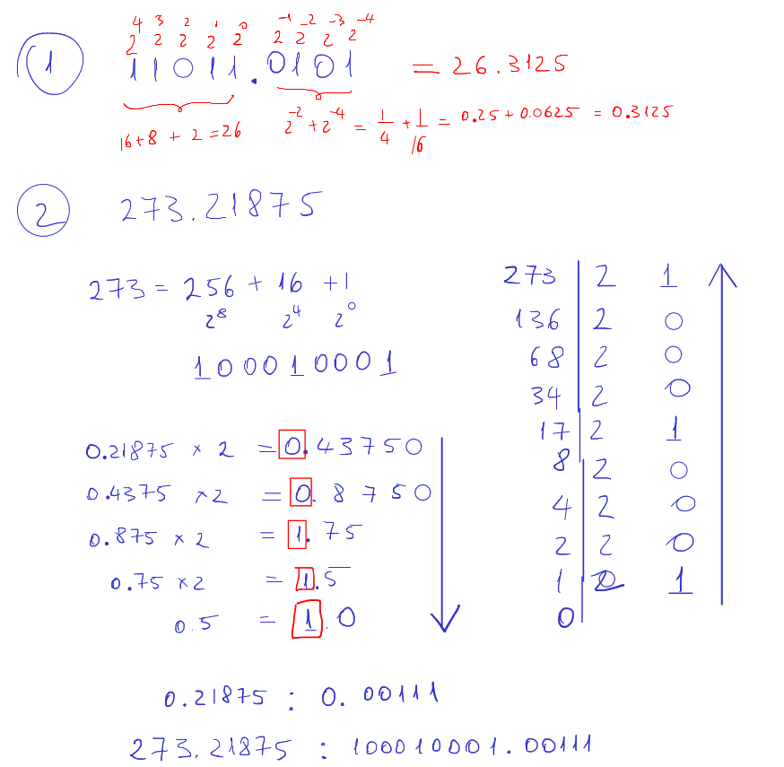

Effects of finite word length representation of the filter coefficients
Lab 10, SDP
1 Objective
Students should observe the effects of having fixed point coefficients in a digital filter, and be able to mitigate the effects.
2 Theoretical notions
Binary representation of fractionary numbers

TBD
Filter implementation with second order sections (SOS)
Implementing filters with second order sections means a series implementation, as a sequence of sub-filters of order 2. \[H(z) = H_1(z) \cdot ... \cdot H_n(z) \cdot Gain\]
where each \(H_i(z)\) has order 2: \[H_i(z) = \frac{b_0^{(i)} + b_1^{(i)} z^{-1} + b_2^{(i)} z^{-2}}{1 + a_1^{(i)} z^{-1} + a_2^{(i)} z^{-2}}\]
Example:
3 Theoretical exercises
Convert the following binary number to the decimal value:
\(11011.0101\)
Convert in binary fixed point format (signed, 6 integer bits, 6 fractionary bits - 1S6I6F the following numbers:
\(273.21875\)
Convert in binary fixed point format (signed, 6 integer bits, 6 fractionary bits - 1S6I6F the following negative numbers. Negative numbers shall be represented in sign-value, 1’s complement (C1) and 2’s complement (C2) formats.
- -22
- -22.21875
Quantize the samples \(x_1 = 0.42625\) and \(x_2 = -0.4333\) the fixed point format 1S0I4F via:
- Truncation
- Rounding
- Truncation in absolute value
The negative values shall be represented in C2 format.
4 Practical exercises
Use Matlab’s
fdatoolto design a low-pass IIR filter, Butterworth type, order 4, with cutoff frequency of 4kHz for a sampling frequency of 44.1kHz. Export the coefficients of the direct form II implementation to the Matlab Workspace asbanda.In Matlab’s
fdatool, set the filter arithmetic to “fixed-point arithmetic” and modify the following:- Set the format to fixed point 1S2I7F. How does the filter’s transfer function change?
- Increase the number of bits in the fractionary part. How does the filter’s transfer function change? For what number of bits do you consider the errors to be negligible?
- Export the coefficients of the direct form II implementation to Matlab’s Workspace as
b1anda1.
Repeat the preceding exercise with the filter implemented in series form (“Second-Order-Sections”). Which implementation has smallest errors? Export the coefficients to Matlab’s Workspace as
b2anda2.Load the
mtlbaudio signal from Matlab (load mtlb;). Usefilter()to filter the signal with the original filter (banda) and with the fixed point coefficients (b1anda1).- Plot the difference between the two filtered signals.
- Plot the histogram of the difference signal. What is it’s shape? What is the average value of the errors?
5 Final questions
- TBD